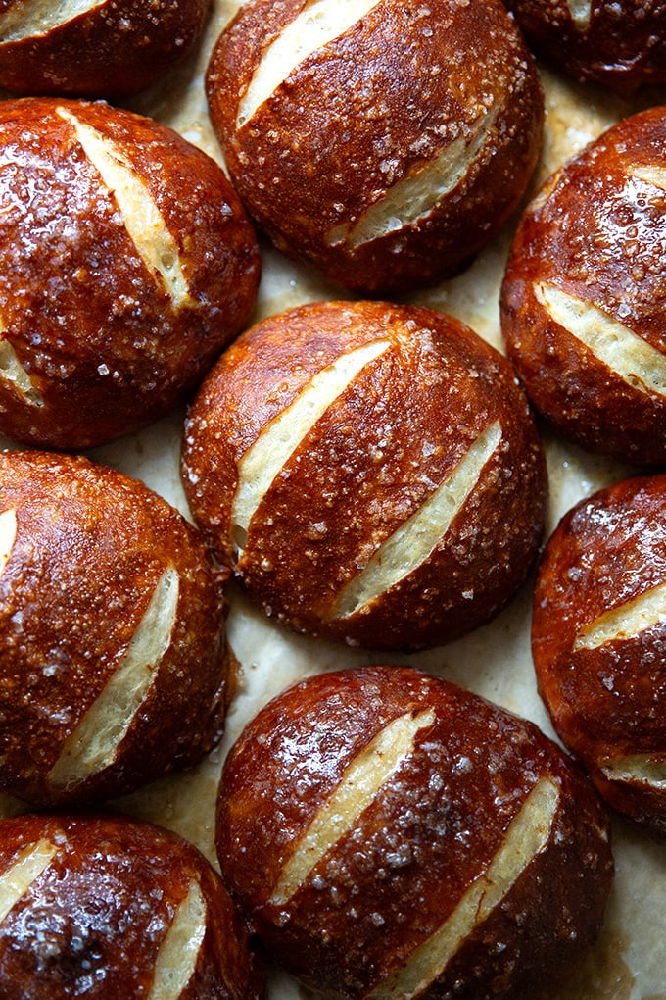

Pretzel Bread

Ingredients
- 4 cups all-purpose flour
- 2 teaspoons active dry yeast
- 1 1/2 cups warm water
- 2 tablespoons granulated sugar
- 1 1/2 teaspoons salt
- 1/4 cup baking soda
- 1 egg, beaten
- Coarse sea salt, for topping
Instructions
- In a large mixing bowl, combine warm water, sugar, and yeast. Let it sit for about 5 minutes until frothy.
- Add flour and salt to the yeast mixture. Stir until a dough forms.
- Knead the dough on a lightly floured surface for about 5 minutes until smooth and elastic.
- Place the dough in a greased bowl, cover with a clean towel, and let it rise in a warm place for about 1 hour or until doubled in size.
- Preheat oven to 375°F (190°C) and line a baking sheet with parchment paper.
- Divide the dough into 8 equal pieces. Shape each piece into a ball or desired shape and place them on the prepared baking sheet.
- In a large pot, bring water and baking soda to a boil.
- Carefully add the pretzel dough balls to the boiling water mixture, one or two at a time, for about 30 seconds. Remove with a slotted spoon and place them back on the baking sheet.
- Brush each dough ball with beaten egg and sprinkle with coarse sea salt.
- Bake for 20-25 minutes or until pretzel bread is golden brown.
- Remove from oven and let cool on a wire rack before serving.
Enjoy your Pretzel Bread!